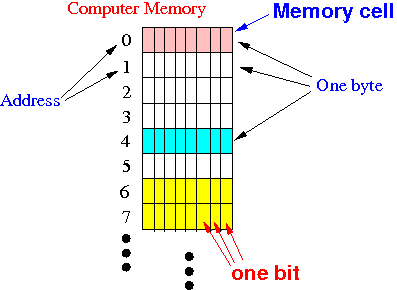
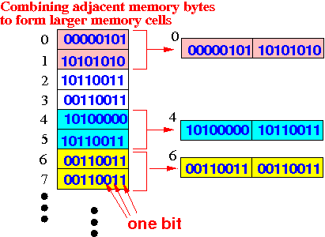
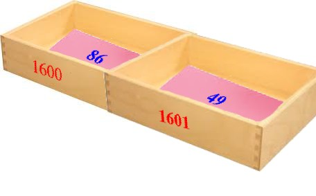

- Structure of
computer memory:
- Computer memory
consists of sequence
memory cells:
 Each memory cell has 8 bits and it's called a byte of memory
- A bit =
the most elementary
electrical memory element
- A bit can
"remember" (store)
either the
value 0 (= "off" state)
or the
value 1 (= "on" state)
(I.e.: bit = one electronical switch - can be on or off)
- A bit can
"remember" (store)
either the
value 0 (= "off" state)
or the
value 1 (= "on" state)
- Each byte in the
memory is
is uniquely identified by
an
address
- Computer memory
consists of sequence
memory cells:
- Each memory byte can
store a 8 bit pattern
(= a pattern consisting of 8 binary bits)
Example:

- Each byte of memory can contain
one of the following
256 possible
binary patterns
(= binary numbers):
00000000 00000001 00000010 00000011 00000100 00000101 00000110 00000111 00001000 00001001 00001010 00001011 00001100 00001101 00001110 00001111 00010000 00010001 00010010 00010011 00010100 00010101 00010110 00010111 00011000 00011001 00011010 00011011 00011100 00011101 00011110 00011111 00100000 00100001 00100010 00100011 00100100 00100101 00100110 00100111 00101000 00101001 00101010 00101011 00101100 00101101 00101110 00101111 00110000 00110001 00110010 00110011 00110100 00110101 00110110 00110111 00111000 00111001 00111010 00111011 00111100 00111101 00111110 00111111 .... (And so on...) 1 bit can hold 21 = 2 different patterns: 0 1 2 bits can hold 22 = 4 different patterns: 00 01 10 11 .. 8 bits can hold 28 = 256 different patterns: see above
- Each pattern
is a binary number and
here are the
values
represented by some of the possible
binary numbers that
you can form with 8 bits:
00000000 00000001 00000010 00000011 00000100 00000101 00000110 00000111 0 1 2 3 4 5 6 7 00001000 00001001 00001010 00001011 00001100 00001101 00001110 00001111 8 9 10 11 12 13 14 15 00010000 00010001 00010010 00010011 00010100 00010101 00010110 00010111 16 17 18 19 20 21 22 23 00011000 00011001 00011010 00011011 00011100 00011101 00011110 00011111 24 25 26 27 28 29 30 31 00100000 00100001 00100010 00100011 00100100 00100101 00100110 00100111 32 33 34 35 36 37 38 39 .... (And so on...) The corresponding decimal value is computed using this formula: dn×2n + dn-1×2n-1 ... + d1×21 + d0×20 (see: click here)
- Limitation of
one memory byte:
- One memory byte
can only store
one of
256 different values
- Many applications need much larger number of different values
- One memory byte
can only store
one of
256 different values
- Combinating
adjacent
memory cells:
- The memory (RAM) has the
capability to
combine
a number of adjacent memory bytes
to represent larger values
with some limitations
- A memory byte at an
even address
can be combined with
the subsequence memory byte to
form a 16 bits memory cell
- Each pair of memory cells can
store
216 = 65536 different
patterns
- Each pattern is used
to represent a
unique value
Example:
- A short typed variable
in Java is
stored in a pair of memory cells
- That's why
you can store the values
-32768 .. 32767 in
a short typed variable
See: click here
- A short typed variable
in Java is
stored in a pair of memory cells
Example:
 Bytes at address 0 and 1 can form a 16 bits memory cell (with the address 0)
Bytes at address 2 and 3 can form a 16 bits memory cell (with the address 2)
Bytes at address 4 and 5 can form a 16 bits memory cell (with the address 4)
And so on.
- Each pair of memory cells can
store
216 = 65536 different
patterns
- A memory byte at an
address divisible by 4
can be combined with
3 subsequence memory bytes to
form a 32 bits memory cell
- Each quartet of memory cells can
store
232 = 4294967296 different
patterns
- Each pattern is used
to represent a
unique value
Example:
- A int typed variable
in Java is
stored in a quartet of memory cells
- That's why
you can store the values
-2147483648 .. 2147483647 in
a int typed variable
See: click here
- A int typed variable
in Java is
stored in a quartet of memory cells
Example:

Bytes at address 0,1,2 and 3 can form a 32 bits memory cell (with the address 0)
Bytes at address 4,5,6 and 7 can form a 16 bits memory cell (with the address 4)
And so on. - Each quartet of memory cells can
store
232 = 4294967296 different
patterns
- The memory (RAM) has the
capability to
combine
a number of adjacent memory bytes
to represent larger values
with some limitations
- You can compare
computer memory with
mailboxes that do not need
a code to be
opened:
I use mailboxes because you are familiar to use mailbox addresses to identify a mailbox uniquely:
- Just like mailboxes, each memory cell has an address that is used to identify the memory cell (byte) uniquely.
However, unlike "traditional mailboxes", these mail boxes "operate differently" than the ones you find in a post office.
I will describe the analogy next....
- Analogy to help you understand how
computer memory operates:
- Each mailbox
contains a small sheet of
paper that you can
only write
2 digits.
Example: (I use a wooden box to depict a mail box - the number 1600 is the address of the mailbox)
Each mailbox is uniquely identified by its (mailbox) address
You can only write one of the following numbers on the sheet of paper inside a mailbox
- The address of the mailbox
is similar to the
address of a
memory byte
- The sheet of paper in the mailbox is similar to the byte (8 bits) at the memory address: these 8 bits can only store a small value
- The address of the mailbox
is similar to the
address of a
memory byte
- Here are 2 adjacent mailboxes
(one with address 1600 that
stores the number 86 and
it's neighbor with address 1601 that
stores the number 49:
 You have the choice to interpret this situation as:
- The mail box 1600 stores the value 86 and the mail box 1601 stores the value 49
- The (combined) mail box 1600 stores the value 8649 (i.e.: you can store larger values in a combined mailbox !)
This is the same with computer memory:
- When the computer memory contains:
The computer has the choice to interpret the values at addresses 4,5 in any one of the following ways:
- Memory address 4 stores the byte value 10100000 and memory address 5 stores the byte value 10110011
- Memory address 4 stores the 2 bytes (= short) value 1010000010110011
- Each mailbox
contains a small sheet of
paper that you can
only write
2 digits.
- To fully understand what why the
memory
has a "byte combination limitation",
you will need to
take CS355 where we
study the memory circuitry
(i.e.: the way that the
memory circuit is
connected (onto the data bus) will limit
the possible byte combinations that
you can read/write to the
memory)
For CS255, it suffices to say that the cause of this phenomenon is the way that the memory bytes are connected onto the data bus that limits the possible combinations. Recall that the CPU and memory inter-connected by 3 buses (address bus, data bus and control bus):

The limitation that:
- A memory byte at an even address can be combined with the subsequence memory byte to form a 16 bits memory cell
is caused by the manner the bits of the memory are connected to to the wires of the data bus
- The number of wire of the
databus
used to be
16 wires
Until around 2010, the databus contain 32 wires
Today's computer have databuses that contain 64 wires
I will use a databus with 16 wires to explain the "byte combination" behavior of the memory.
- Each wire of the data bus
can transfer 1 bit of
information between the CPU and memory
- The way the
bits in the
memory are
connect to the databus is
as follows:
The computer will always transfer 16 bits when the computer read or write to the memory
- The memory can
activate adjacent consecutive memory
cells to perform
read/write operations
So to transfer 16 bits simulatanously, the computer will activate 2 (adjacent consecutive) memory cells (because each memory cells has 8 bits)
However, due to the internal structure the of the memory (that you will learn in CS355), the memory can only activate the following combinations of memory cells:
- memory cell 0 + memory cell 1
- memory cell 2 + memory cell 3
- memory cell 4 + memory cell 5
- ...
Example:
In other words, the memory can only combine adjacent consecutive memory cell where:
- The first byte is located at an even address N
- The second byte is located at the odd address (N+1)
That's why only bytes that is located at an even address can be combined with the byte at the next address
- The memory can
activate adjacent consecutive memory
cells to perform
read/write operations
- When computers use
32 wires for
databus, the
bytes were organized into groups of 4 bytes
when they are transfer
between CPU and memory
Due to this organization, only a group of 4 bytes that start as an address that is divisible by 4 can be combined